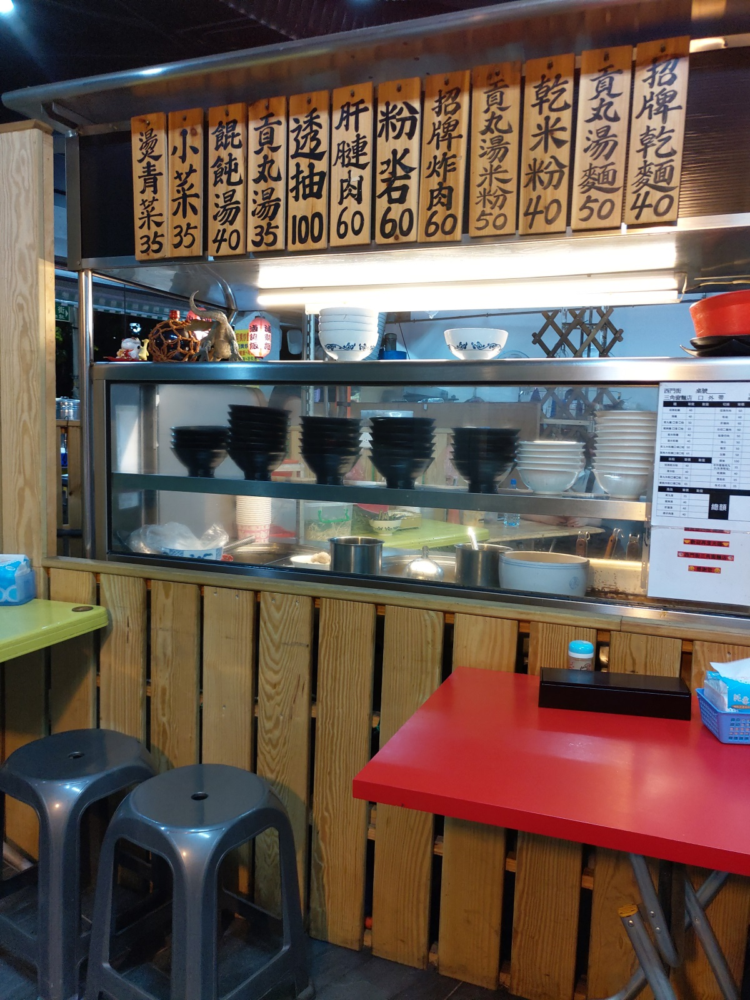
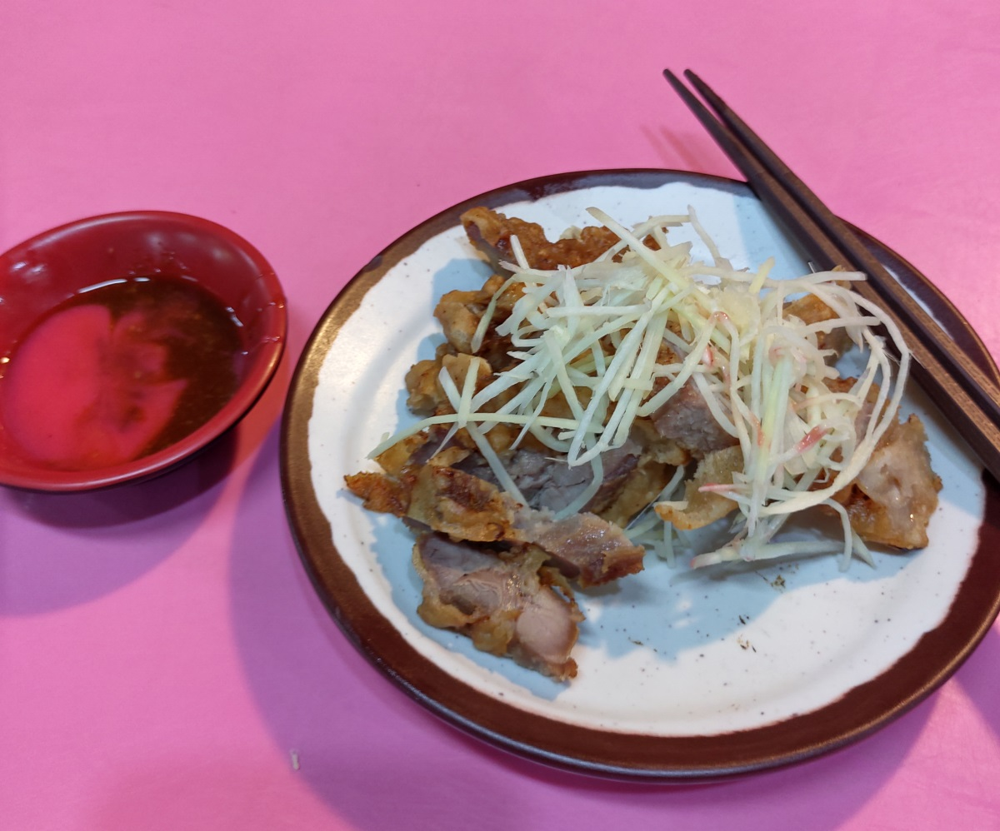
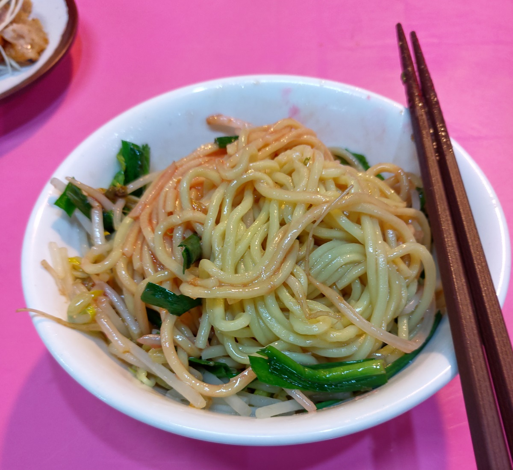
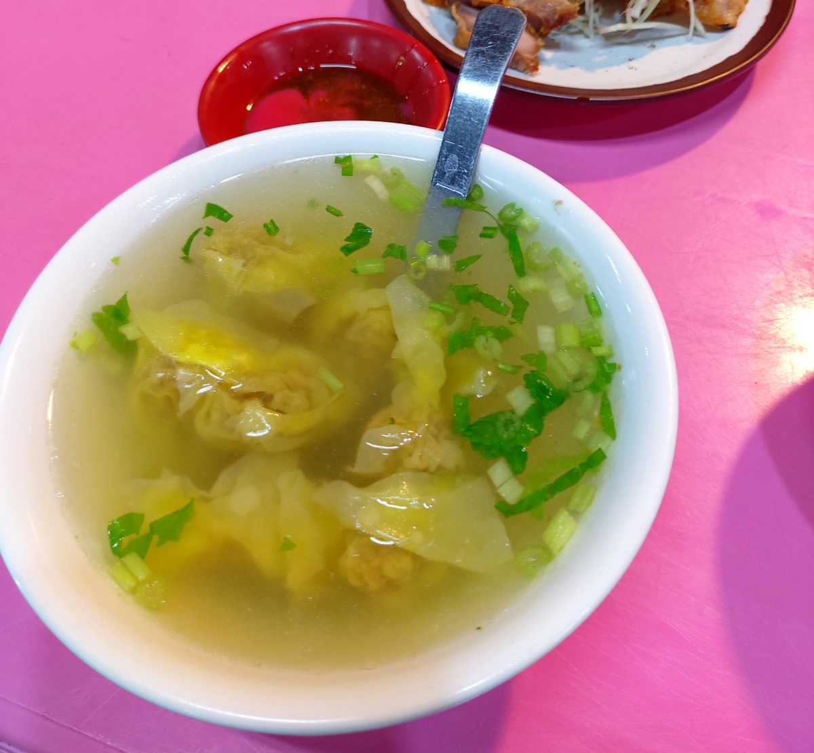

[新竹] 三角窗麵食
餐廳名稱: 三角窗麵食
地 址: 新竹市東區西門街1號
營業時間: 17:00–23:00(禮拜二公休)
剛來新竹工作時，閒暇之餘去大遠百晃晃，當時這家店就位於 大遠百旁邊西門街與西大路交叉口的三角窗，看生意不錯， 也吃了一次，當然味道就是還可以的程度。據說是新竹歷史 悠久的老店之一。過沒幾個月，店面就收了，換成毛利更高 的眼鏡行了。
似乎在去年 第二代接手，重新開幕了，位址搬到 西門街1號。 這個地址是一個新大樓，一樓共擠了4家店，4家都做宵夜場， 所以晚上過來，還挺熱鬧的。
小攤子門口，桌子則是擺在騎樓。 
這盤炸肉說是招牌，但很糟糕，超級硬，也是冷的。也不是說 一定要現炸，畢竟沒收你幾塊錢，也許為了冷冷地吃，故意弄 這麼硬，完全不欣賞。 
麵是很正常的醬油膏、紅醬 古早麵，味道希望再重一點。 
這是這餐第一名，一碗超過平均小吃店水準的餛飩湯。 
附近即使是宵夜時段，也不好停車，最後是停在數個機車格。 遠一點，滷味成 旁邊，是有個私人停車場。我想，對三角窗 麵食有美好記憶的人，就來吃吧，即使略退步了。像我這種 沒有美好回憶的人，吃一次就好了。